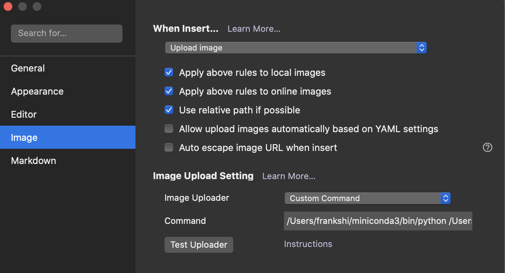

在 Markdown 新解决方案：Typora+本地备份+GitHub 图床 中，我给出的 Markdown 图片管理方案是采用本地备份加上 GitHub 同步的思路；简言之，为了保证图片的安全性采用了本地存储，需要进行分享的话将其中的图片连接改为 GitHub 图床，这种方案在稳定性上表现得很好，但是操作上到底还是有些繁琐（需要手动上传图片，并运行链接替换的代码）。
疫情在家，这样的方案也十分有效，最近回了学校，重新用起了 NAS，于是参考这篇文章 http://guiu.xyz/p/ab70f304.html （已失效），配合 Chevereto 探索了一套新的方案；相较于之前的那种，这里的优势在于配合代码实现了图片的自动上传，因此可以直接分享；但与此同时带来的问题在于，服务依赖于图床的稳定性，由于是自用的 NAS 所以相对来说还是可以的，用了一个多月下来体验不错（域名选择的话，直接用了 Synology 免费的那个 id.synology.me 还是比较可靠的）。
搭建 Chevereto 图床
图床搭建的话，可以参考这一篇 https://post.smzdm.com/p/a3gvxnon/ ，没什么好多说的，我把当时参考的链接放在下面。
- Chevereto 的 GitHub 主页在这里 https://github.com/Chevereto/Chevereto-Free ；这是中文文档 https://ch.cndrew.cn/cn/Preface/Introduction/
- 另外可能需要图片的转移，参见 http://guiu.xyz/p/1bcf5275.html 写的非常好
- Typora 结合 Chevereto 方案：python编写typora插件实现传图到chevereto http://guiu.xyz/p/ab70f304.html
搭建完成之后可以收获一个支持多账号的在线图床服务，可以自行探索，我不在用也就不多说了。
利用 Python 实现 Typora 图片上传
原始方案来自 http://guiu.xyz/p/ab70f304.html 不过网页已失效，这里 https://zhuanlan.zhihu.com/p/150785463 有一个备份可供参考，下面也赘述一番。
在合适的文件夹下新建一个 upload.py 文件，内容如下（记得当时好像做了一点修改，原始的可参考上面的知乎链接）
#!/usr/bin/env python3
# -*- encoding: utf-8 -*-
# author: guiu
# data: 2020.2.28
import requests
import json
import mimetypes
import argparse
import sys
APP_DESC = """
一个上传图片到chevereto图床的命令行工具
"""
print(APP_DESC)
if len(sys.argv) == 1:
sys.argv.append('--help')
parser = argparse.ArgumentParser()
parser.add_argument('-s', '--source', type=str, nargs='+', help="", required=True)
parser.add_argument('-c', '--config', default="./config.json", help="读取配置文件", required=True)
args = parser.parse_args()
# 从参数中获取要上传的文件列表
img_list = args.source
# print(img_list)
def read_conf(path):
with open(path,"r",encoding="utf-8") as f:
confstr = f.read()
conf = json.loads(confstr)
return conf
def up_to_chevereto(img_list):
# 获得本地图片路径后，上传至图床并记录返回的json字段
for img in img_list:
# 先判断传过来的是本地路径还是远程图片地址
if "http" == img[:4]:
# 非本地图片的话可以考虑下载到本地再上传，但是没这个必要
print(img)
continue
else:
try:
res_json = upload(formatSource(img))
parse_response_url(res_json,img)
except:
print(img+"\t上传失败")
def upload(files):
# 图床api
# APIKey = "THERE PUT YOUR APIKEY"
conf = read_conf(args.config)
url = conf['url'] + "?key=" + conf['APIKEY']
r = requests.post(url, files=files)
return json.loads(r.text)
def formatSource(filename):
imageList = []
mime_type = mimetypes.guess_type(filename)[0]
imageList.append(
('source', (filename, open(filename, 'rb'), mime_type))
)
#print (imageList)
return imageList
def parse_response_url(json, img_path):
# 从返回的json中解析字段
if json['status_code'] != 200:
print("{}\tweb端返回失败,可能是APIKey不对. status_code {} .".format(
img_path, json['status_code'])
)
else:
img_url = json["image"]["url"]
print(img_url)
up_to_chevereto(img_list)
可以看到需要调用 Chevereto 的 APIKEY。需要在 Chevereto 的 仪表板-设置 中，在设置旁边的下列菜单中选择 API ，即可找到 key，默认有一个也可以自定义。
新建一个 config.json 保存配置
{
"APIKEY": "YOUR API KEY",
"url": "http://your_website/api/1/upload/"
}
注意将其中的 key 值和网址做相应的替换。
Typora 中进行相应设置
配置如下

其中的上传代码为，下面是我的配置，注意在使用的时候，将 Python 地址、代码地址、配置文件地址作相应的替换。
~/miniconda3/bin/python ~/SynologyDrive/Markdown/upload.py -c ~/SynologyDrive/Markdown/config.json -s
不知道为什么直接用 python 不可以，只好写了个全地址，上传的速度还是可以的。